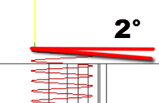

<table valign=middle><tr><td height=24 width=24></td><td><div id="rampAngle"><h3 id="rampAngle">Угол наклона (град.)</h3>
</td></tr></table>
<p>Управление углом спирали, ведущей к полости.</p>
<br><center>
<center><table valign=top class="tipTable">
<tr>
<td><center></center></td>
</tr><tr>
<td><center><p><b>С уклоном 2°</b></p></center></td>
</tr></table><left>
</div>